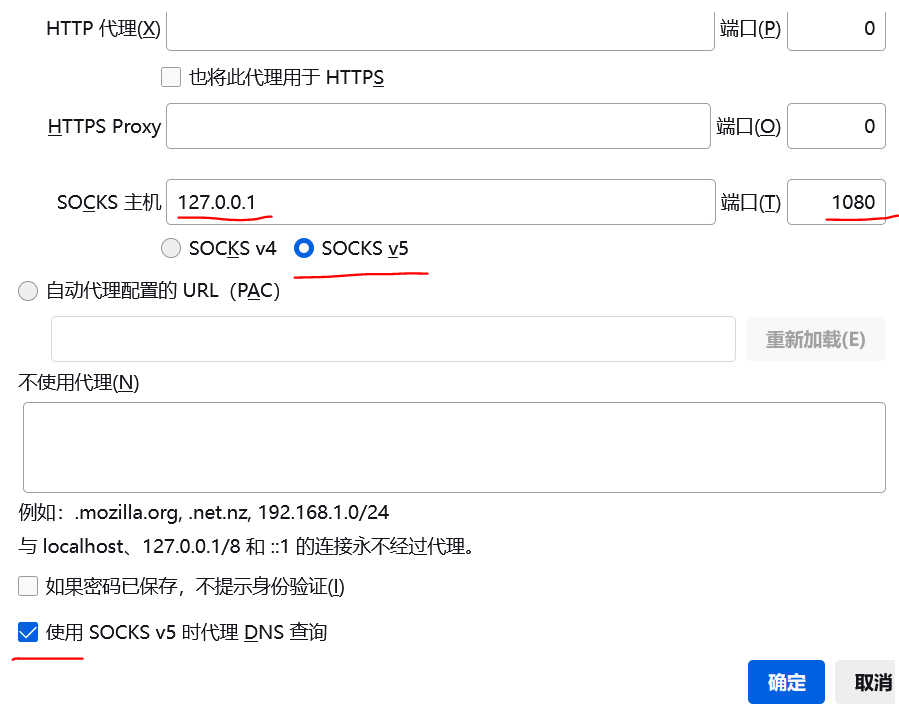
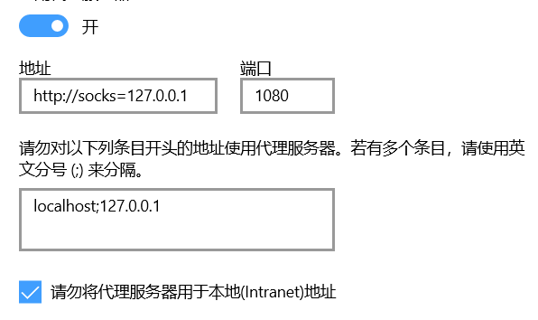

SSH Tunnel
准备VM
创建一个azure linux vm, ./ssh/config示例:
Host vm1
HostName xx.xx.xx.xx
User L001
IdentityFile azure001_key.pem
Compression yes
DynamicForward 1080
ServerAliveCountMax 60
ServerAliveInterval 30
设置代理
火狐浏览器
火狐浏览器中，网址栏输入"about:preferences"，随后下拉至最下方"网络设置"-->"设置"-->"手动配置代理"

所有浏览器(Win10)
网络设置-->连接
然后此处会显示

注意，不能直接搜索代理、然后设置，否则不生效
链接
保持与vm的链接，正常使用(火狐)浏览器就行了
ssh -vvv vm1
查看IP
vm中:
## 外网
curl ifconfig.me
curl cip.cc
## 内网？
ip route show
看下浏览器访问ifconfig.me是否已经变为远程地址
Python SSH Tunnel
比方说链接SQL数据库啥的
Install Packages
sudo apt-get update
sudo apt install python3-pip
python3 -m pip install sshtunnel
ssh-keygen ## /home/L001/.ssh/id_rsa
Example
from sshtunnel import SSHTunnelForwarder
server = SSHTunnelForwarder(
SSH_SERVER, #Step 2 连接远端服务器SSH端口
ssh_username=USERNAME,
ssh_password=USERPWD,
local_bind_address=LOCAL_ADDR, #Step 1 连接本地地址，若不配置则随机绑定
remote_bind_address=REMOTE_ADDR) #Step 3 跳转到远端服务器
server.start()
print(server.local_bind_port)
其余参考
- SSH Tunnel: https://zhuanlan.zhihu.com/p/46243205
- SSH Forwarder: http://www.voidcc.com/project/sshtunnel
server = SSHTunnelForwarder(
ssh_address_or_host=None,
ssh_config_file='~/.ssh/config',
ssh_host_key=None,
ssh_password=None,
ssh_pkey=None,
ssh_private_key_password=None,
ssh_proxy=None,
ssh_proxy_enabled=True,
ssh_username=None,
local_bind_address=None,
local_bind_addresses=None,
logger=None,
mute_exceptions=False,
remote_bind_address=None,
remote_bind_addresses=None,
set_keepalive=5.0,
threaded=True,
compression=None,
allow_agent=True,
host_pkey_directories=None)
参考
ProxyChains https://zhuanlan.zhihu.com/p/166375631